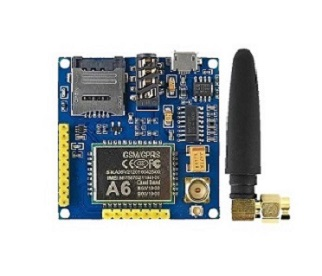
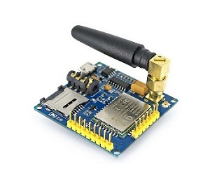

GOOUUU TECH A6 GSM/GPRS DEV BOARD MODULE WITH ANTENNA

The A6 Module is a professional serial GSM/GPRS development board. The A6 supports GPRS and SMS data transmission. The A6 communicates with microcontroller via UART port.
User Guide
When connecting your A6 to your TTL module, follow the following table to guide you with correct wiring.
| TTL Module | A6 GSM Module |
|---|---|
| VCC | EN |
| GND | GND |
| RX | U_TXD |
| TX | U_RXD |
To power your module use the micro USB port on the A6 board. When connecting your board for serial communication, use a Baudrate of 115200.